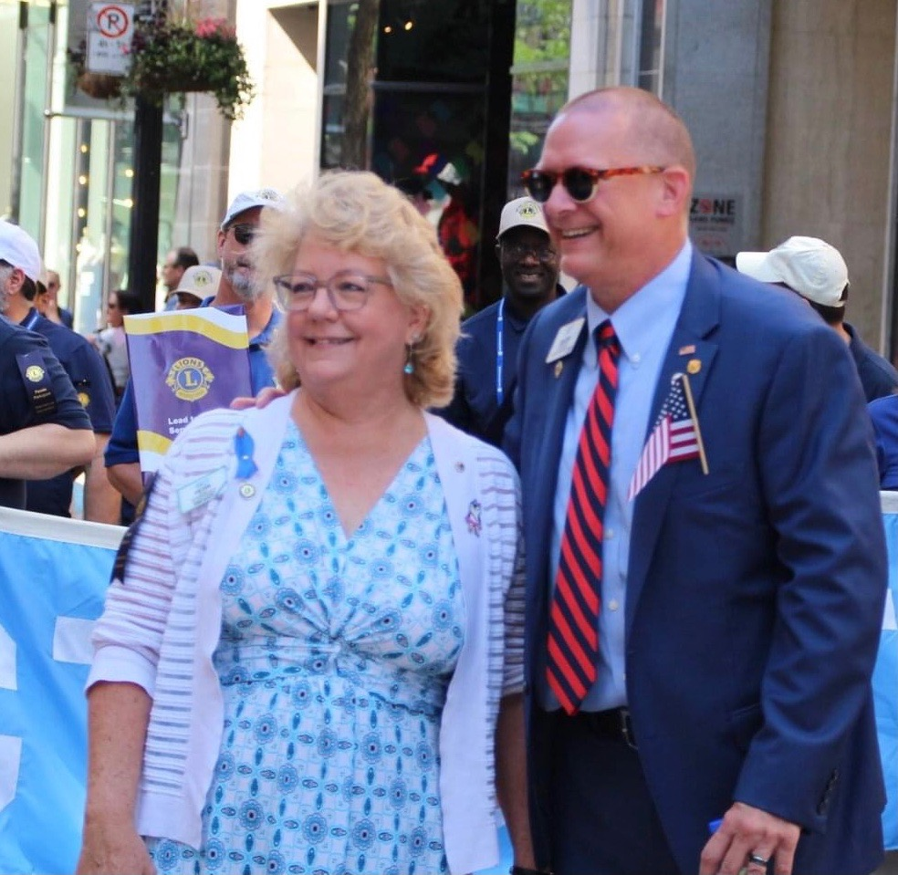

Lion Mark has served our International Association of Lions Clubs in many capacities since 1996. A proud member of the Brookfield Lions Club, Lion Mark has a great appreciation for what our local Lions Clubs do every day to improve the well-being of their communities through active service. Along his Lions journey, Lion Mark has benefited greatly from the guidance and support of many mentors. Because of them, he more fully understands the importance of life-long learning, the development of leadership skills, and the fostering of lasting relationships based on trust and mutual respect. To this day, Lion Mark continues to accept the challenge of serving in roles of increasing responsibility within Lionism.
Lion Mark views the opportunity to serve our Association as International Third Vice President with the same drive, determination and passion that he has in serving his local community. He is qualified to serve in this position, and is wholly committed to leading by example, and to representing all Lions in accordance with our International Purpose and Code of Ethics. As the endorsed candidate of Multiple District 23 (Connecticut) seeking the high office of International Third Vice President, Lion Mark is confident in his abilities to represent our Association, and pledges to do everything in his power to support the mission and vision of Lions International.
In August 2022, Lion Mark received the unanimous endorsement of the Executive Officers and Board of Directors of Lions Clubs International for International Third Vice President for Lions Year 2023-2024.
|
|

Lion Mark and Lion Lyn have been married for nearly 40 years, and are the proud parents of three adult daughters. A recognized part of their community, not just for their Lions activities, Lion Mark and Lion Lyn are also known for their past and present involvement in local civic, church and school groups. Both are career-minded professionals – Lion Mark in legal and financial services and Lion Lyn in accounting and operations. In their occasional free moments, Lion Lyn enjoys reading, crafting and bird-watching, while Lion Mark enjoys reading, playing guitar, golf and mountain biking. |
|
|